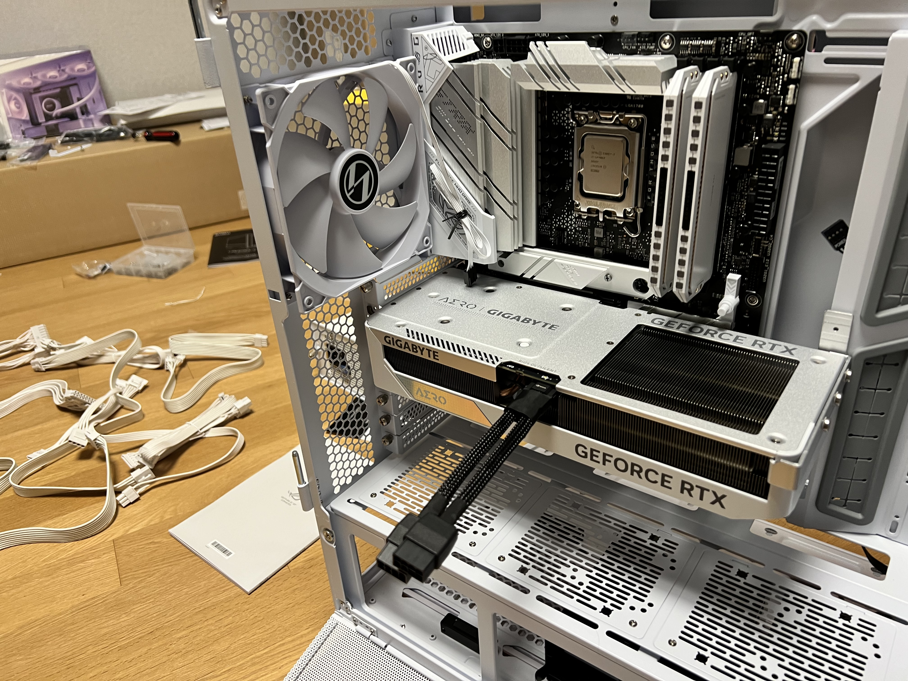

Hobbies
Outside of academics and technical projects, my hobbies give me space to explore creativity, technology, competition, and personal expression. Whether I am flying FPV drones, playing electric guitar, or relaxing through video games, these interests reflect different sides of how I learn, focus, and have fun.
FPV Drones
FPV drone flying combines engineering, control, and fast reaction time. I am interested in the way drones connect hardware, camera systems, motors, and manual control into one immersive experience.
Electric Guitar
Playing electric guitar gives me a creative outlet away from schoolwork and technical projects. It helps me develop patience, rhythm, and personal expression through music.
Video Games
Video games are both a way to relax and a way to think strategically. I enjoy games that involve decision-making, mechanics, timing, teamwork, and problem-solving.
Why These Hobbies Matter
These hobbies may seem separate, but they connect to many of the same skills I use in my projects. FPV drones relate to robotics, control systems, and spatial awareness. Electric guitar develops discipline and creativity. Video games involve strategy, adaptation, and quick decision-making. Together, they show how I enjoy learning through hands-on experience, experimentation, and personal challenge.
Media
This section can include photos or videos of my FPV drone setup, guitar practice, favorite game clips, or other moments that show these hobbies in action.

FPV drone setup, flight footage, or related equipment.

Electric guitar practice, gear, or performance-related media.

Gaming setup, clips, or screenshots from games I enjoy.